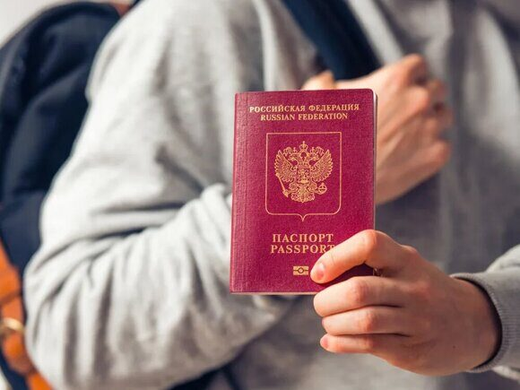

« НазадПолучение загранпаспорта по доверенности: миф или реальность? Получение заграничного паспорта для другого лица по доверенности – это тема, которая вызывает много вопросов и требует внимательного подхода. Существует множество нюансов, которые необходимо учитывать, чтобы избежать проблем в процессе оформления. Во-первых, важно определить, какой именно тип паспорта требуется: биометрический или старого образца. Биометрические паспорта содержат электронный чип с личной информацией владельца и требуют более строгих процедур при оформлении. Например, для получения биометрического паспорта необходимо пройти процедуру снятия отпечатков пальцев при подаче и получении, и фотографирования, что подразумевает обязательное присутствие заявителя. В случае старого образца такие требования менее строгие, и в некоторых случаях возможно оформление заграничного паспорта без личного присутствия. Во-вторых, бытует мнение, что цель поездки играет значительную роль в процессе оформления. Если заявитель планирует поездку по туристической визе, то личное присутствие обязательно. Аналогично, если цель поездки связана с работой или учебой, может потребоваться подтверждение намерений и предоставление дополнительных документов, что может сделать процесс более сложным. В таких случаях миграционные службы требуют обязательного личного присутствия для подтверждения данных. Третьим важным аспектом является возраст заявителя. Для несовершеннолетних детей оформление паспорта по доверенности имеет свои особенности. В большинстве случаев согласие обоих родителей или законных представителей не требуется, а также нотариально заверенная доверенность также не нужна. Детям до 14 лет нет необходимости присутствовать в МФЦ. Поэтому, если вы планируете оформить заграничный паспорт для ребенка до 14 лет, убедитесь, что у вас есть все необходимые документы. Наконец, наличие законных оснований для представительства является критически важным условием. Документы, подтверждающие родственные связи, такие как свидетельства о рождении или браке, а также нотариально заверенные доверенности с четким указанием полномочий, должны быть подготовлены заранее. Это поможет избежать задержек в процессе оформления и обеспечит более гладкое взаимодействие с миграционными службами. Таким образом, для успешного получения заграничного паспорта для другого лица по доверенности важно учитывать все вышеперечисленные факторы. Рекомендуется заранее обратиться в миграционную службу для получения консультации и уточнения всех деталей, чтобы избежать возможных проблем и недоразумений в процессе оформления. Что говорится в законах о возможности получения загранпаспорта по доверенностиВопрос о возможности получения заграничного паспорта по доверенности в России достаточно актуален и требует внимательного рассмотрения действующего законодательства. Основным документом, который регулирует порядок выезда граждан из Российской Федерации, является Федеральный закон от 15.08.1996 N 114-ФЗ "О порядке выезда из Российской Федерации и въезда в Российскую Федерацию". Этот закон устанавливает общие правила, касающиеся выезда и въезда, однако в нем отсутствуют четкие указания на возможность получения заграничного паспорта по доверенности. Таким образом, закон не предоставляет оснований для оформления паспорта без личного присутствия гражданина. Дополнительно, Постановление Правительства РФ от 16.04.2019 N 457 "Об утверждении Административного регламента Министерства внутренних дел Российской Федерации по предоставлению государственной услуги по оформлению и выдаче паспорта гражданина Российской Федерации, удостоверяющего личность гражданина Российской Федерации за пределами территории Российской Федерации" также не содержит упоминаний о возможности получения заграничного паспорта по доверенности. В этом документе подробно описана процедура оформления загранпаспорта, включая необходимые документы, сроки и порядок подачи заявлений, однако все эти действия должны осуществляться непосредственно самим гражданином. Кроме того, стоит обратить внимание на Гражданский кодекс Российской Федерации, который регулирует вопросы доверенности и представительства. В частности, статья 185 ГК РФ определяет доверенность как письменное уполномочие, которое выдается одним лицом другому для представительства перед третьими лицами. Тем не менее, даже в рамках этой статьи не предусмотрена возможность получения заграничного паспорта по доверенности. Это означает, что для оформления паспорта гражданину необходимо лично явиться в соответствующий орган, предоставить все требуемые документы и пройти процедуру идентификации. Почему невозможно получить биометрический паспорт по доверенностиБиометрический паспорт отличается от традиционного документа не только сроком действия, который составляет 10 лет, но и рядом дополнительных особенностей, связанных с обеспечением безопасности и идентификации личности. Одной из ключевых характеристик биометрического паспорта является обязательная процедура дактилоскопии, которая включает в себя сдачу отпечатков пальцев. Это важный шаг, позволяющий удостоверить личность владельца паспорта и значительно повысить уровень безопасности. В условиях современных угроз, таких как международная напряженность и организованная преступность, защита паспортных данных становится особенно актуальной. Уникальные биометрические данные, такие как отпечатки пальцев и фотография, позволяют избежать случаев мошенничества и подделки документов. Кроме того, для получения биометрического паспорта требуется пройти фотосъемку, которая должна соответствовать строгим требованиям, установленным государственными органами. Например, фотографии должны быть сделаны на светлом фоне, лицо должно быть четко видно, а выражение должно быть нейтральным. Эти требования размещены на портале Госуслуги, поэтому важно заранее ознакомиться с ними, чтобы избежать отказа в выдаче паспорта. Все эти процедуры невозможно выполнить по доверенности. Даже если у вас имеется нотариально заверенная доверенность, она не дает права другому лицу представлять ваши интересы в этом вопросе. Это связано с тем, что биометрические данные являются уникальными и должны предоставляться только самим заявителем. Следовательно, если вы планируете получить биометрический заграничный паспорт, вам необходимо будет лично посетить паспортный стол или консульство. Важно заранее подготовиться к этому визиту. Вам потребуется собрать все необходимые документы, такие как внутренний паспорт РФ, старый действующий загранпаспорт, а также другие удостоверяющие личность бумаги. В некоторых странах могут быть дополнительные требования к документам, поэтому рекомендуется заранее ознакомиться с актуальной информацией на сайте консульства или ГУВМ МВД. Это поможет избежать неприятных ситуаций и сэкономить время. Кроме того, стоит учитывать, что в зависимости от региона страны, в котором вы находитесь, процесс получения биометрического паспорта может отличаться. Например, в некоторых регионах могут быть введены дополнительные этапы, такие как выписка из домовой книги или предоставление справки о несудимости. Поэтому важно быть готовым к тому, что процесс может занять больше времени, чем вы ожидали. Получение биометрического заграничного паспорта — это процесс, который требует внимательности и тщательной подготовки. Личное присутствие заявителя является обязательным условием, что связано с высокими стандартами безопасности и защитой личных данных. Убедитесь, что у вас есть все необходимые документы и информация, чтобы успешно пройти все этапы получения паспорта. Не забывайте, что соблюдение всех требований и правил поможет вам избежать ненужных задержек и проблем в будущем. Некоторые случаи, когда возможно получение загранпаспорта старого образца по доверенностиПолучение заграничного паспорта старого образца, который действителен в течение пяти лет, по доверенности – это процесс, который может вызвать ряд трудностей и недоразумений. Хотя в некоторых ситуациях это возможно, на практике такие случаи встречаются довольно редко и требуют соблюдения определенных условий. Основная сложность заключается в необходимости подтвердить законные основания для представительства и минимизировать риск незаконных действий. Несовершеннолетние детиОдним из наиболее распространенных случаев, когда заграничный паспорт можно получить по доверенности, является ситуация с несовершеннолетними детьми до 14 лет. В этом случае один из родителей, опекунов или попечителей может не оформлять доверенность на другого родителя, а самостоятельно получить загранпаспорт для ребенка. Однако важно отметить, что даже при наличии доверенности, ГУВМ МВД может запросить дополнительные документы. Это могут быть справка по форме 8, а также документы, удостоверяющие полномочия представителя. В этом случае необходимо личное присутствие одного из родителей, что прописано в регламенте работы УВМ МВД. Кроме того, следует учитывать, что если один из родителей против получения паспорта и поставил запрет на выезд, это может стать серьезным препятствием. В таких ситуациях необходимо будет обращаться в суд для разрешения спора о возможности выезда ребенка за границу. Граждане с ограниченными возможностями здоровьяДля граждан, которые по состоянию здоровья не могут лично явиться в миграционную службу, также предусмотрена возможность получения заграничного паспорта по доверенности. Однако здесь требования становятся еще строже. Необходимо предоставить медицинские документы, которые подтвердят невозможность личного присутствия. Это могут быть справки от врачей или выписки из медицинских учреждений. Кроме того, доверенность должна быть нотариально заверена и содержать максимально подробное описание полномочий представителя. Например, в ней должно быть указано, что представитель имеет право действовать от имени гражданина в вопросах, связанных с получением заграничного паспорта. Даже при соблюдении всех этих условий УВМ МВД может потребовать дополнительные подтверждения или документы, что может затянуть процесс. Лица, находящиеся под следствием или в местах лишения свободыДля лиц, находящихся под следствием или отбывающих наказание в местах лишения свободы, получение заграничного паспорта по доверенности также возможно, но с определенными условиями. В этом случае необходимо предоставить документальное подтверждение статуса, например, справку из следственного изолятора или суда. Доверенность должна быть оформлена в соответствии с установленными законом процедурами, что может потребовать дополнительных усилий со стороны представителя. Важно понимать, что даже в этих случаях, когда получение паспорта по доверенности теоретически возможно, на практике это может быть очень сложным процессом. Необходимо тщательно подготовить все документы и быть готовым к тому, что могут возникнуть дополнительные требования со стороны миграционных органов. Таким образом, получение заграничного паспорта старого образца по доверенности может быть реализовано в ограниченных случаях, таких как несовершеннолетние дети, граждане с ограниченными возможностями здоровья и лица, находящиеся под следствием. Каждый из этих случаев требует внимательной подготовки и соблюдения всех необходимых формальностей. Важно заранее проконсультироваться с юристом или специалистом в области миграционного права, чтобы избежать возможных проблем и задержек в процессе получения паспорта. Оформление доверенности на получение загранпаспорта старого образцаЕсли вы решили воспользоваться этой возможностью, учтите несколько ключевых моментов. Прежде всего, доверенность должна быть нотариально удостоверена. Это означает, что вам необходимо обратиться к нотариусу, который подтвердит вашу подпись и удостоверит документ. Нотариус проверит вашу личность и убедится, что вы действительно хотите передать полномочия другому лицу. Без нотариального заверения доверенность не будет иметь юридической силы, и ваш представитель не сможет действовать от вашего имени. Второй важный аспект — это точное указание полномочий. Доверенность должна содержать четкое и подробное описание прав, которые вы передаете своему представителю. Например, необходимо указать, что он имеет право не только подать заявление на получение заграничного паспорта, но и подписать его, а также забрать готовый паспорт из МФЦ. Чем более конкретно вы опишете полномочия, тем меньше шансов на возникновение недоразумений. Не забудьте указать срок действия доверенности. Это может быть как фиксированный срок (например, 3 месяца), так и срок, зависящий от выполнения определенного действия (например, до момента получения паспорта). Указание срока поможет избежать ситуаций, когда доверенность остается в силе дольше, чем необходимо. Кроме того, необходимо указать полные данные как доверителя, так и представителя. Доверитель — это лицо, которому оформляют паспорт, и его данные должны включать фамилию, имя, отчество, дату рождения, паспортные данные и адрес проживания. Представитель также должен быть четко идентифицирован: укажите его полное имя, дату рождения, паспортные данные и адрес. Это поможет удостовериться в том, что доверенность будет использована именно тем лицом, которому вы ее передали. Важно помнить, что доверенность может быть отозвана в любой момент, если вы измените свое решение. Для этого достаточно уведомить нотариуса и представить новую доверенность, если это необходимо. Также стоит учитывать, что в некоторых случаях может потребоваться личное присутствие доверителя, например, для подачи документов или получения паспорта. Таким образом, оформление доверенности — это процесс, требующий внимания к деталям и соблюдения всех необходимых формальностей. Следуя этим рекомендациям, вы сможете передать полномочия своему представителю и обеспечить получение заграничного паспорта. Часто задаваемые вопросы о получении заграничного паспорта по доверенности
Ответ: К сожалению, получение заграничного паспорта, как нового образца, так и старого, по доверенности невозможно. В соответствии с действующим законодательством, заявление на получение паспорта должно подаваться исключительно лично заявителем. Это правило распространяется как на подачу заявления, так и на получение самого паспорта. Даже наличие нотариально заверенной доверенности не дает право доверенному лицу получить паспорт за другого человека. Это связано с тем, что для получения паспорта необходимо пройти процедуру идентификации личности, а также подтвердить подлинность всех предоставленных документов. Важно отметить, что такая мера предосторожности направлена на предотвращение мошенничества и защиту прав граждан.
Ответ: Уважительные причины, такие как серьезная болезнь или длительная командировка, не освобождают от необходимости личного присутствия при подаче заявления и получении паспорта. Однако в случае серьезной болезни заявитель может обратиться в территориальное подразделение Главного управления по вопросам миграции МВД России с просьбой о возможности индивидуального подхода к его ситуации. Например, можно попросить о выезде сотрудника на дом для оформления необходимых документов. Тем не менее, стоит понимать, что такое решение не гарантировано и зависит от конкретных обстоятельств. Что касается ситуации с командировкой, то здесь также нет возможности избежать личного присутствия. Человеку придется либо отложить получение паспорта до своего возвращения, либо попытаться организовать свои дела так, чтобы подать заявление до выезда. Важно помнить, что даже если доверенное лицо теоретически сможет подать документы, оно не сможет получить паспорт, так как для этого требуется личное присутствие самого заявителя.
Ответ: Нет, подать документы на оформление заграничного паспорта по доверенности также нельзя. Как и в предыдущих случаях, заявление должно подаваться исключительно самим заявителем. Это обусловлено тем, что для получения биометрического паспорта требуется предоставить биометрические данные, такие как отпечатки пальцев и фотография, а также подтвердить свою личность. Доверенное лицо может оказать помощь в сборе необходимых документов, но само заявление должно подаваться только лично. Дополнительные аспекты получения заграничного паспортаПолучение заграничного паспорта — это важный процесс, который требует внимательного подхода. Если вы планируете поездку за границу, то стоит заранее позаботиться о документах. Для оформления заграничного паспорта нужно подготовить следующие документы:
Не забывайте, что срок оформления паспорта может варьироваться. Обычно это занимает от 1 до 3 месяцев в зависимости от загруженности ведомства и места подачи документов. Если вам нужен паспорт в срочном порядке, вы можете воспользоваться услугами экспресс-оформления, но это будет стоить дороже. Советы по оформлению паспорта
Таким образом, процесс получения заграничного паспорта требует внимательности и тщательной подготовки. Личное присутствие заявителя является обязательным условием, и доверенность не поможет избежать этого требования. Убедитесь, что у вас есть все необходимые документы и что вы заранее ознакомились с актуальными правилами и сроками оформления паспорта. ЗаключениеПолучение загранпаспорта по доверенности для другого лица — это задача, которая оказывается крайне сложной и зачастую практически невыполнимой. В соответствии с действующим законодательством Российской Федерации, такая возможность не предусмотрена. Это означает, что закон не допускает оформления заграничного паспорта на основании доверенности, за исключением очень редких случаев. Практика Главного управления по вопросам миграции Министерства внутренних дел (ГУВМ МВД) показывает, что лишь в исключительных ситуациях, когда имеются веские основания и соответствующие подтверждающие документы, может быть принято решение о выдаче паспорта без личного присутствия заявителя. В большинстве случаев личное присутствие заявителя является обязательным условием для получения заграничного паспорта. Это связано с необходимостью удостоверения личности, а также с тем, что сотрудники миграционной службы должны убедиться в том, что документы подаются именно от лица, которому они принадлежат. Важно отметить, что для оформления заграничного паспорта потребуется предоставить ряд документов, таких как внутренний паспорт, фотографии, квитанции об оплате госпошлины и другие бумаги, в зависимости от конкретной ситуации. Рекомендуется заранее обратиться в УВМ МВД для получения консультации по всем необходимым документам и процедурам, которые могут понадобиться в вашем конкретном случае. Это поможет избежать ненужных задержек и упростит процесс получения паспорта. Также следует помнить, что любые попытки обмана или использование поддельных документов могут повлечь за собой серьезные последствия, включая административную или уголовную ответственность. Такие действия не только нарушают закон, но и могут значительно усложнить дальнейшие поездки за границу. Поэтому, прежде чем начинать процесс получения загранпаспорта, лучше всего заранее позаботиться о личном посещении миграционной службы и подготовке всех необходимых документов. Это не только ускорит процесс, но и поможет избежать неприятных ситуаций, связанных с нарушением законодательства. В конечном итоге, соблюдение всех требований и правил позволит вам получить заграничный паспорт без лишних трудностей и задержек. Помощь в оформлении загранпаспорта: быстро и без проблемПолучение загранпаспорта может быть сложным и времязатратным процессом, особенно в трудных ситуациях. Если у вас нехватка времени, проблемы с документами или отказ в выдаче паспорта, Паспортно-визовый центр «Север» готов прийти на помощь. С более чем 20-летним опытом работы в Москве, мы помогаем клиентам справляться с любыми трудностями. Мы поможем восстанавить утраченные документы, консультируем по заполнению анкет и помогаем в индивидуальных ситуациях. При отказе в выдаче паспорта мы анализируем причины и помогаем устранить недочеты для повторной подачи. Наша команда предлагает срочное оформление и индивидуальный подход к каждому клиенту. Мы гарантируем конфиденциальность и прозрачные цены без скрытых платежей. Не тратьте время на бюрократию! Свяжитесь с Паспортно-визовым центром «Север» и получите загранпаспорт быстро и без лишних проблем. Телефон: +79255854195 Адрес: Москва, ул. Тверская, д. 20/1 с1, офис 414.
|
Комментарии
Комментариев пока нет